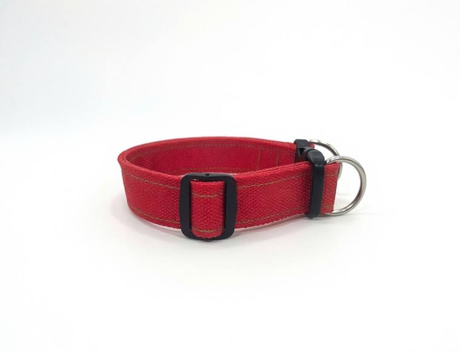
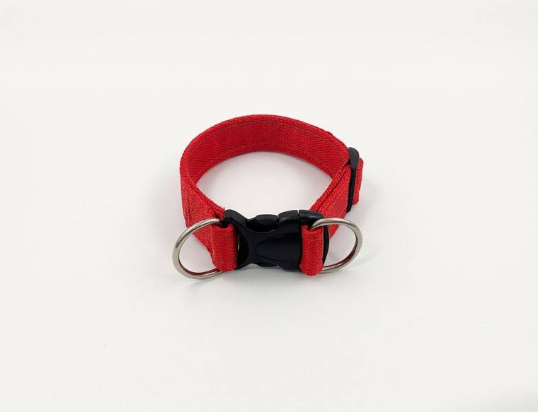
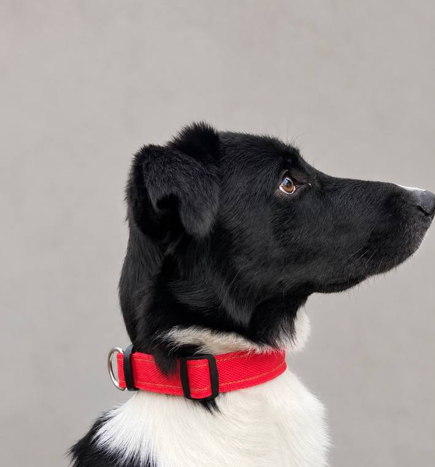
Ошейник без подклада
Трёхслойный, без подклада: плотный, не растягивается, держит форму. Цвет на выбор, на фото красный.
точная цена зависит от обхвата шеи
ЗаказатьВыберите ширину и вариант, цена пересчитается сразу. Если нужного цвета или ширины нет в наличии, изготовлю под заказ за 10 рабочих дней.



Трёхслойный, без подклада: плотный, не растягивается, держит форму. Цвет на выбор, на фото красный.
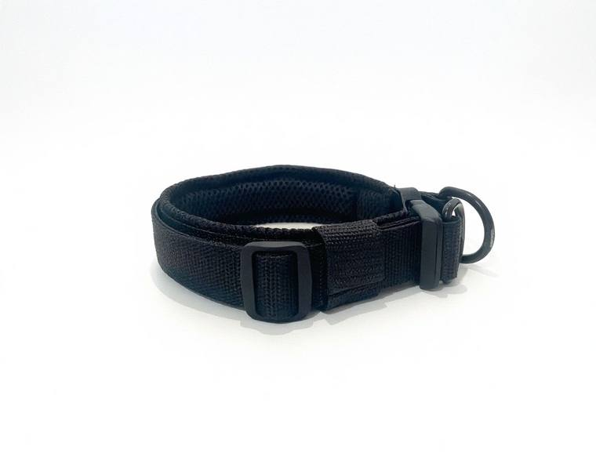
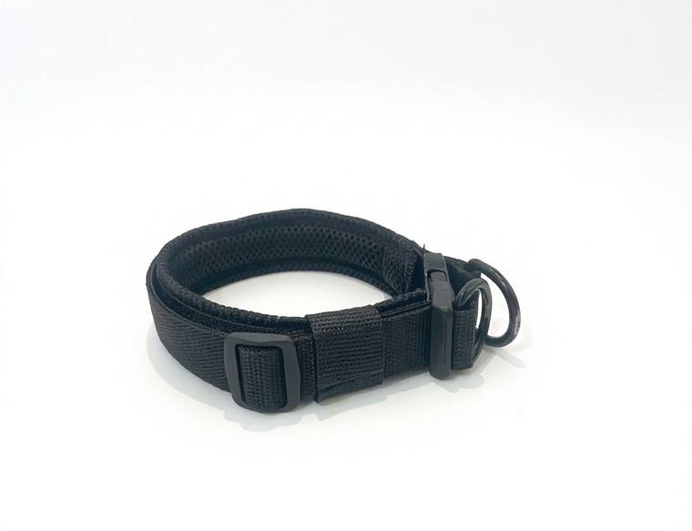
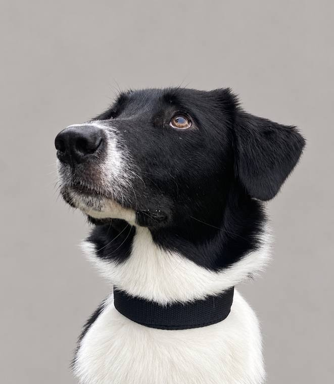
Двухслойный, с мягким подкладом: приятен для шерсти и кожи, не натирает. Цвет на выбор, на фото чёрный.

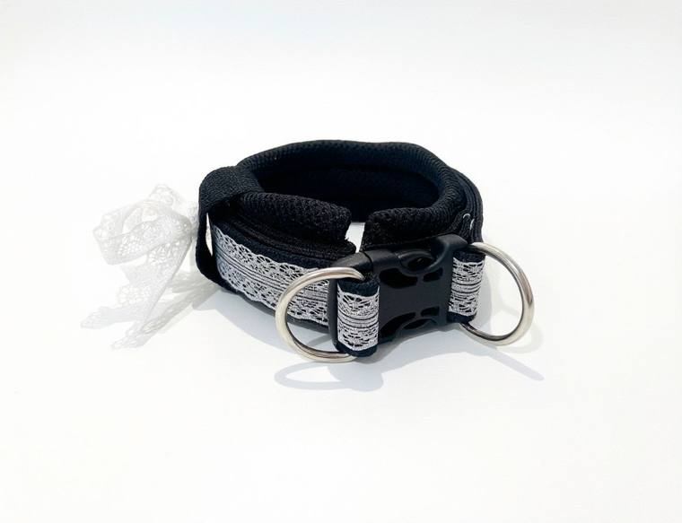
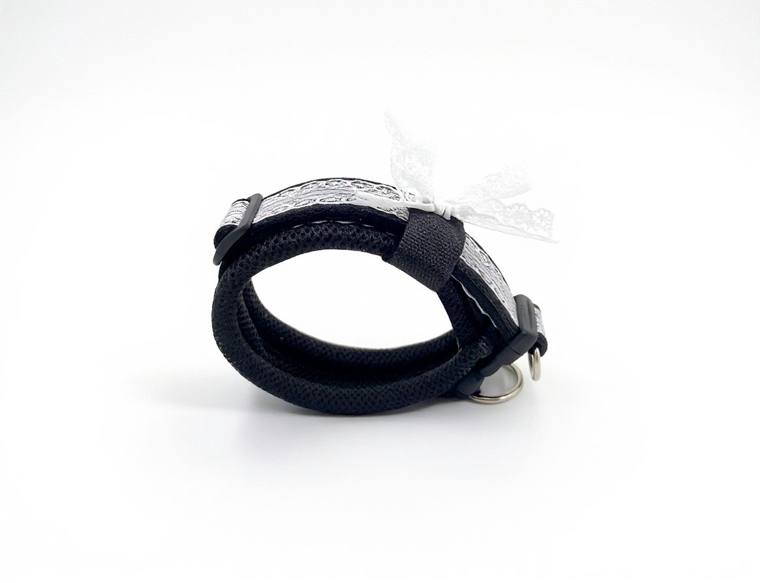
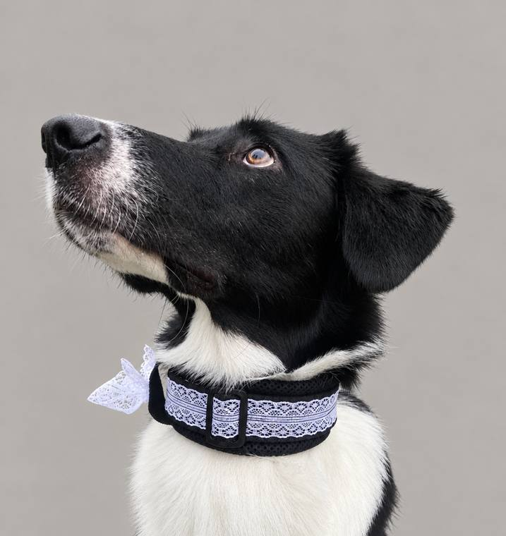
Двухцветный, с кружевом. Трёхслойный без подклада или двухслойный с мягким подкладом.

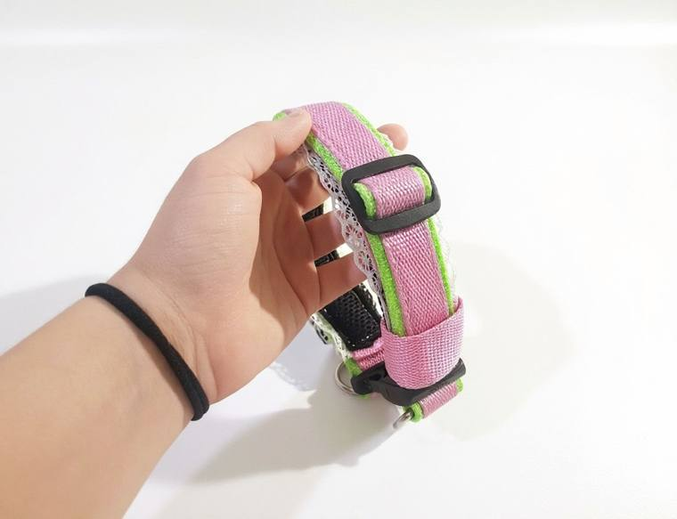
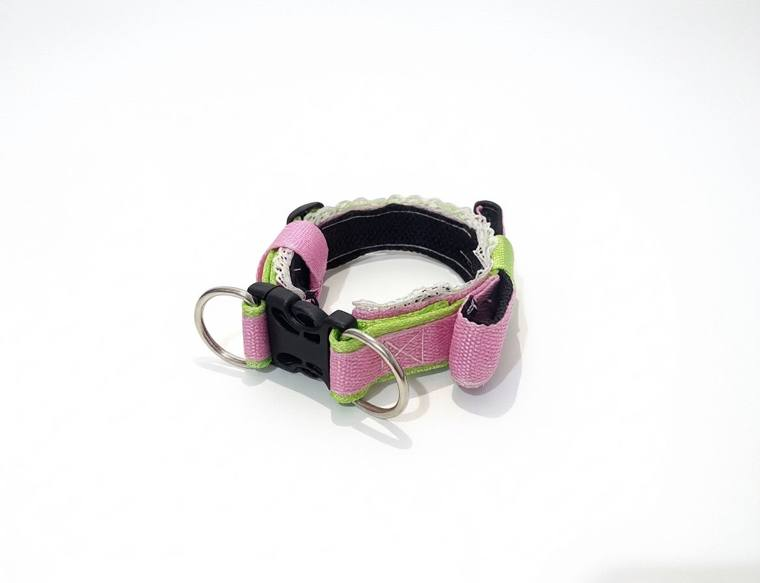
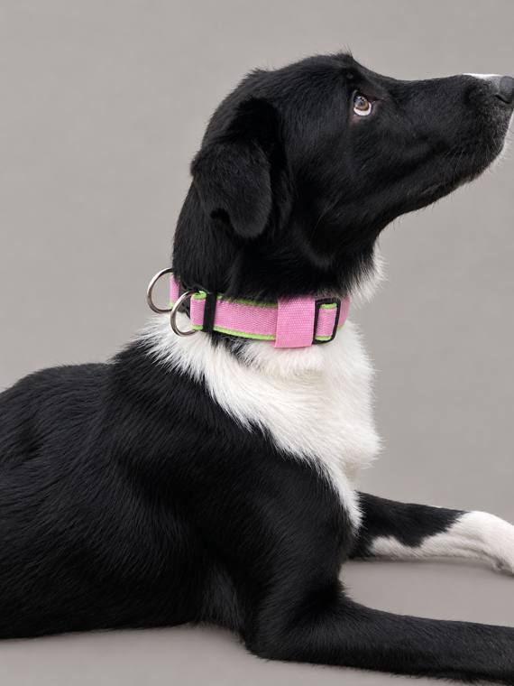
Яркое сочетание цветов. Без подклада или с подкладом, цвета подберём под вашу собаку.
Y-образная анатомическая, шьётся по трём меркам: обхват груди, обхват шеи и длина спины. Как измерить.
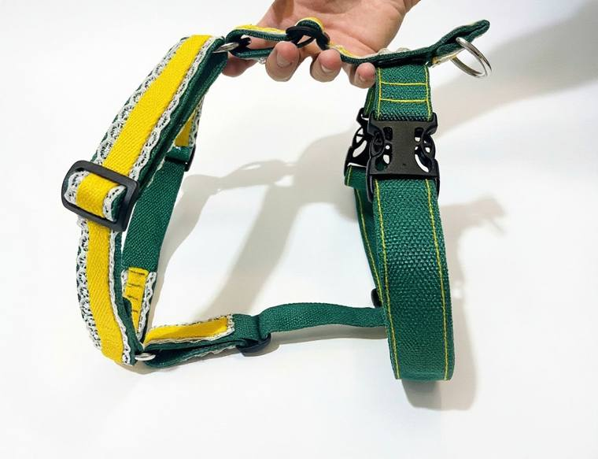
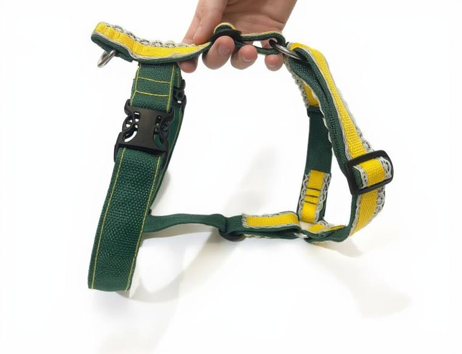
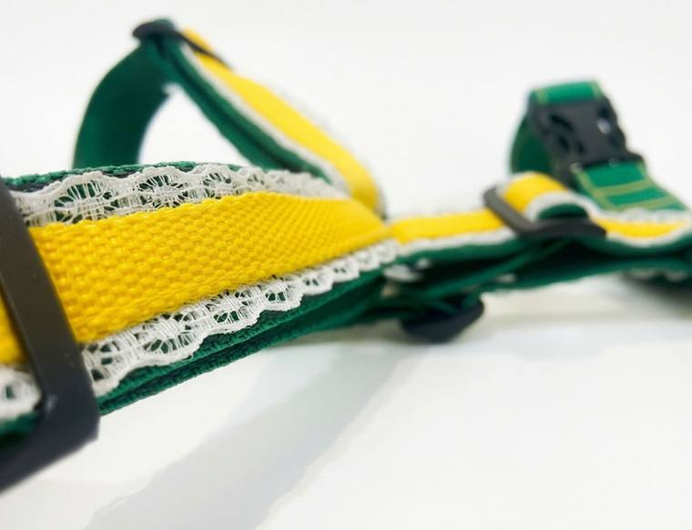
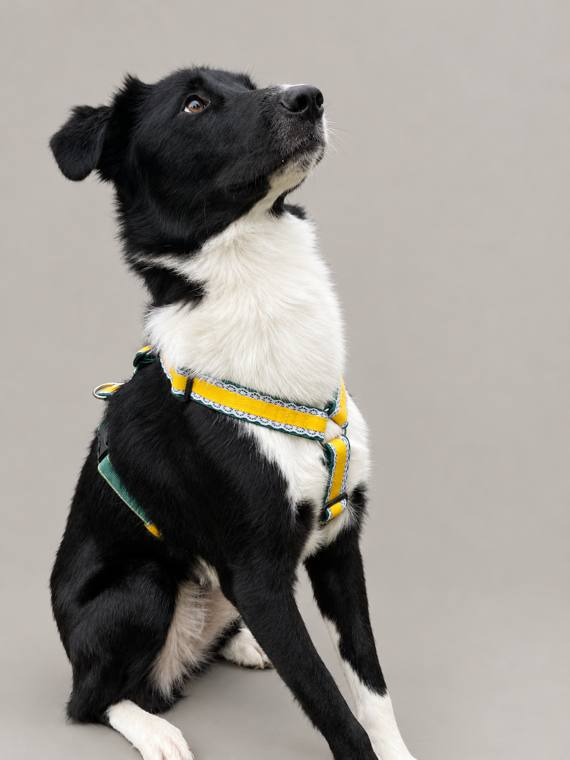
Y-образная анатомическая: не давит на шею и не стесняет плечи. Шьётся по трём меркам.

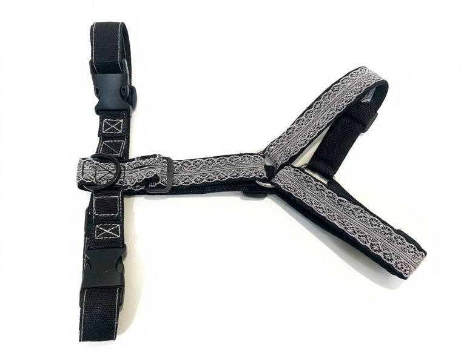
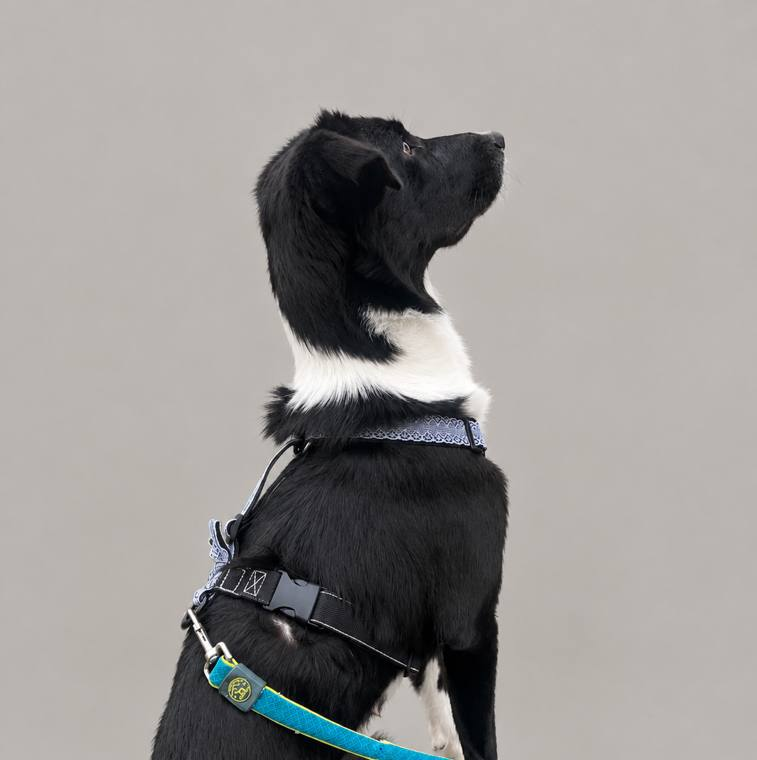
Y-образная анатомическая: не давит на шею и не стесняет плечи. Шьётся по трём меркам.
Делаю скидку при заказе нескольких изделий.